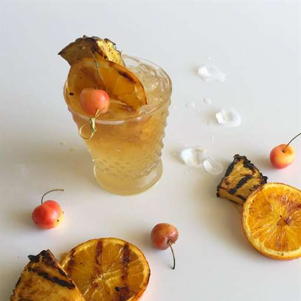

Grilled Pineapple Mai Tai

A Delicious Rum Cocktail!
Ingredients
- Quarter cup white sugar
- 1 lime, halved, or more to taste
- Quarter pineapple, cut into wedges
- Ice
- 1 fluid ounce gold rum
- Half fluid ounce silver rum
- Hald fluid ounce tripple sec
- Half fluid ounce orgeat almond syrup
Steps
- Preheat grill for medium heat and lightly oil the grate.
- Place sugar in a shallow bowl. Dip lime halves in sugar to coat.
- Grill lime and pineapple wedges, turning occasionally, until lightly browned, 5 to 10 minutes. Remove from grill and let cool.
- Fill a cocktail shaker and Old Fashioned glass with ice.
- Squeeze 1/2 fluid ounce lime juice and 1 fluid ounce pineapple juice into the shaker. Add gold rum, silver rum, triple sec, and orgeat syrup. Cover and shake until the outside of shaker has frosted. Strain into the glass and garnish with a grilled pineapple wedge.